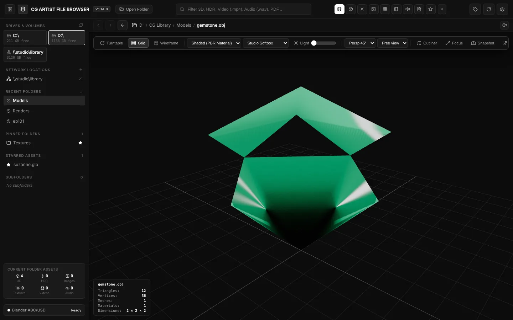
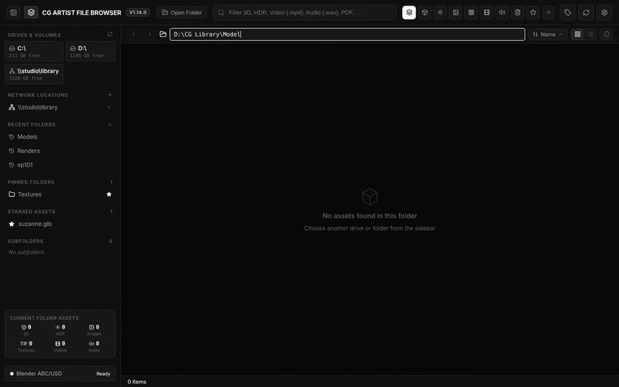

Deep dive
3D models
The 3D viewer for OBJ, FBX, glTF, GLB, STL and PLY: shading, lights, cameras, turntable, animation and statistics.
Opening a model
Models open in the 3D studio viewer: .glb, .gltf, .obj, .fbx, .stl and .ply directly, and .usd, .usda, .usdc, .usdz, .abc and .blend after a background conversion. See USD and Alembic for the conversion.
The layout
The controls sit in a dock along the bottom: Turntable, Grid, Wireframe and Smooth, then the Look and Light menus, then Focus, Snapshot, Reveal and Open in app. Close (or Esc) is in the top right corner. Pro mode adds Normals, UV and the Camera menu to the dock, a Model panel on the right, and an outliner button next to Close. The panel button hides or shows the Model panel, and the app remembers your choice.

Moving the camera
- Drag with the left button to orbit, the right button to pan and the wheel to zoom.
Fframes the model.- The numpad keys snap to views:
1front,3right,7top, andCtrlwith1or3for the back or left side.5switches between perspective and orthographic. - The Camera menu (Pro) sets the focal length (18, 35, 50, 85 and 200 mm) or an orthographic view. The View buttons in the Model panel snap to the front, back, left, right or top.

Shading
The Look menu has the full PBR material, clay, wireframe, normal-map and matcap looks. Wireframe and grid buttons sit in the same dock. Clay and matcap modes show form and surface flow without colour, which is useful for checking dents and smooth curves.
Wireframe, normals and UV view
The Wireframe button shows the edges of the original quads and n-gons, not the triangle lines inside them. A model that really is made of triangles, such as an STL or a scan, still shows every triangle. Because most formats store triangles only, the viewer finds the original polygons again from flat neighbouring triangles.
Normals opens a panel that softens or hardens edges by angle, like Maya. Original uses the normals from the file, Hard makes every edge hard, Soft makes every edge soft, and the angle slider (or number box) makes an edge soft when the two faces meet at less than that angle. Try the Normal Vectors shading look to see the result. It only changes what you see. The file is not touched. Smooth preview has its own smooth normals, so the setting waits until Smooth is off. A model that is too dense stays as it is with a short note.
UV (or U) opens a panel with the UV layout. It shows the object picked in the outliner, or every mesh when nothing is picked. The 0 to 1 tile is outlined. Scroll to zoom, drag to move, and double-click to fit.
Smooth preview and mesh colours
Smooth (or 3, like Maya) shows the meshes smoothed, as if they were subdivided twice. It only changes what you see. The file is not touched. It is off when a model opens, and press it again to go back to the original. Very dense models get fewer subdivisions, and a model that is too dense to smooth stays as it is with a short note. Skinned and animated-shape meshes are left as they are. The Wireframe button keeps showing the original lines (the cage) over the smoothed surface, like Maya's 3 key, not the extra lines made by smoothing.
Random mesh colors in the Model panel (or C) gives every mesh its own colour, so it is easy to see where one part ends and the next begins. It works in the Shaded, Clay and Wireframe Overlay looks, and it is off when a model opens.
Lights and the turntable
The Light menu sets the studio rig: Studio, Neutral, Sun and Rim. The Light angle slider in the Model panel turns the light rig around the model; double-click it to reset. Turntable spins the model at an adjustable speed for a quick look from every side.
Animation
Rigged models with animation clips show playback controls, so you can play, pause and scrub through a clip.
Statistics and snapshot
In Pro mode the Model panel shows the number of triangles, vertices, meshes and materials, the model's size, the material names, and switches for smooth preview, mesh colours and the ground grid. Snapshot saves what you see as a PNG. You choose where the file goes.
The outliner
Press O, or the outliner button in the top right in Pro mode, to open the outliner on the left. It lists the parts of the scene. Click a part to select it and frame it. The USD and Alembic page has an example.
Found a mistake or something missing? Edit this page on GitHub.